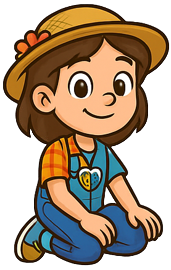
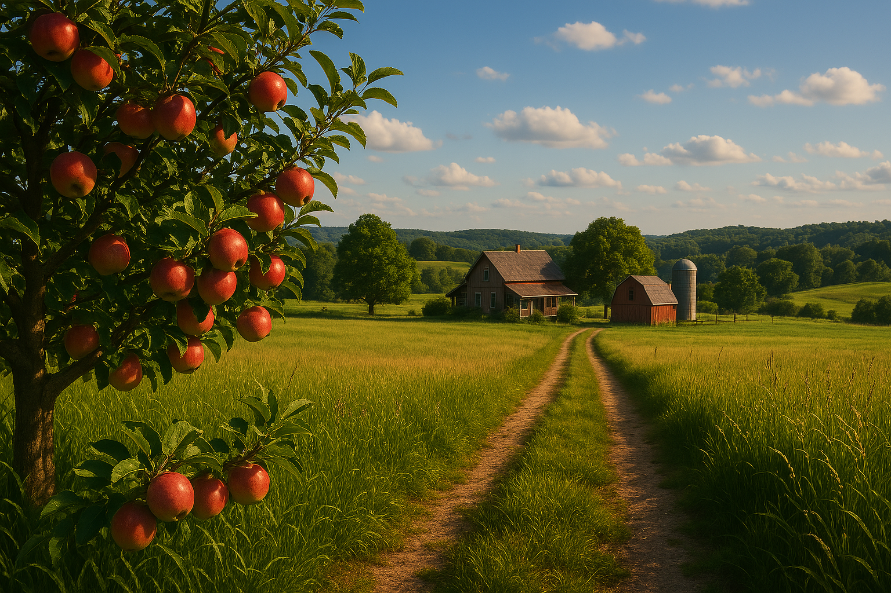
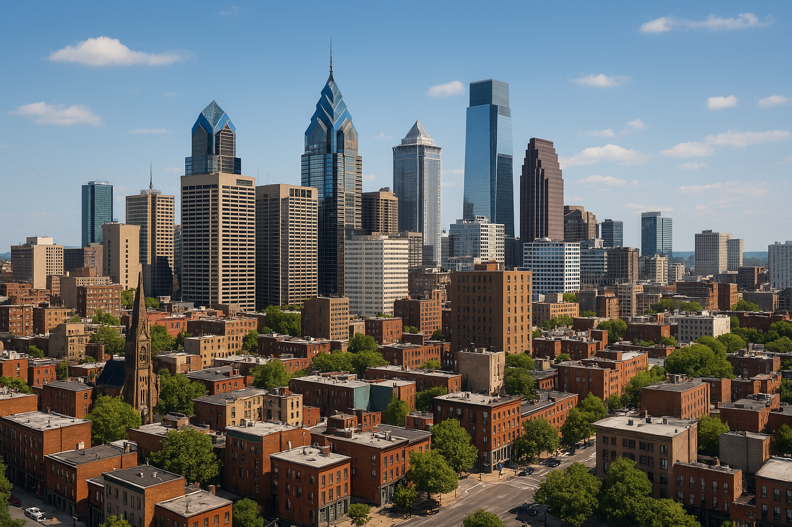
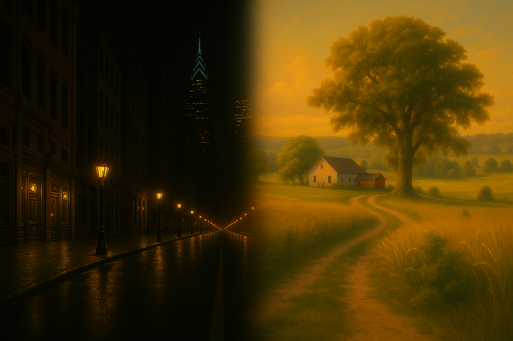
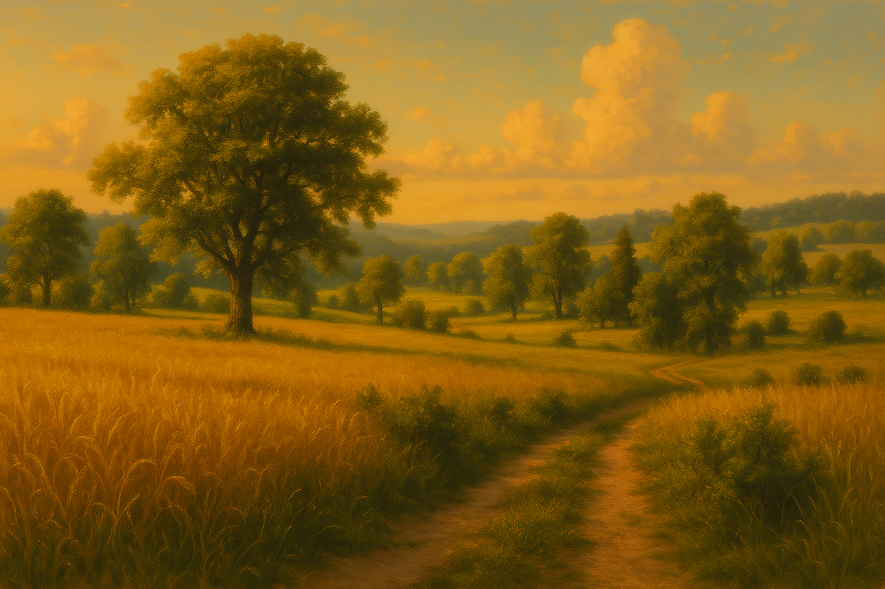
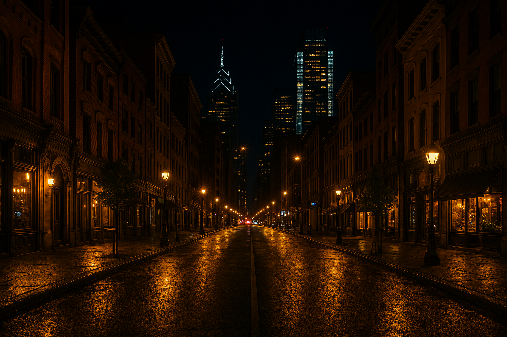

O site foi criado com o intuito de homenagear a cultura entre o campo e a cidade.
O campo e a cidade representam dois espaços distintos, mas interligados, que desempenham papéis
essenciais na sociedade. O campo é conhecido por sua tranquilidade, pela natureza abundante e pela
produção agrícola, sendo fundamental para o abastecimento alimentar e a preservação ambiental. Já a
cidade se destaca pela infraestrutura, pelo acesso a serviços e pela diversidade cultural,
impulsionando a economia e a inovação. Embora tenham características próprias, o campo e a cidade
dependem um do outro, formando uma relação de troca e complementaridade. Valorizar essa conexão é
essencial para um desenvolvimento equilibrado, onde a modernidade urbana e a tradição rural possam
coexistir em harmonia.

Quer conhecer mais sobre o nosso projeto?
Clique em um dos links disponíveis para acessar o conteúdo.
Galeria de Imagens





As imagens deste projeto trazem uma visão geral do campo e a cidade nos dias atuais, de um
lado mostrando a tecnologia e os avanços da cidade e o charme e natureza ligadas ao campo.